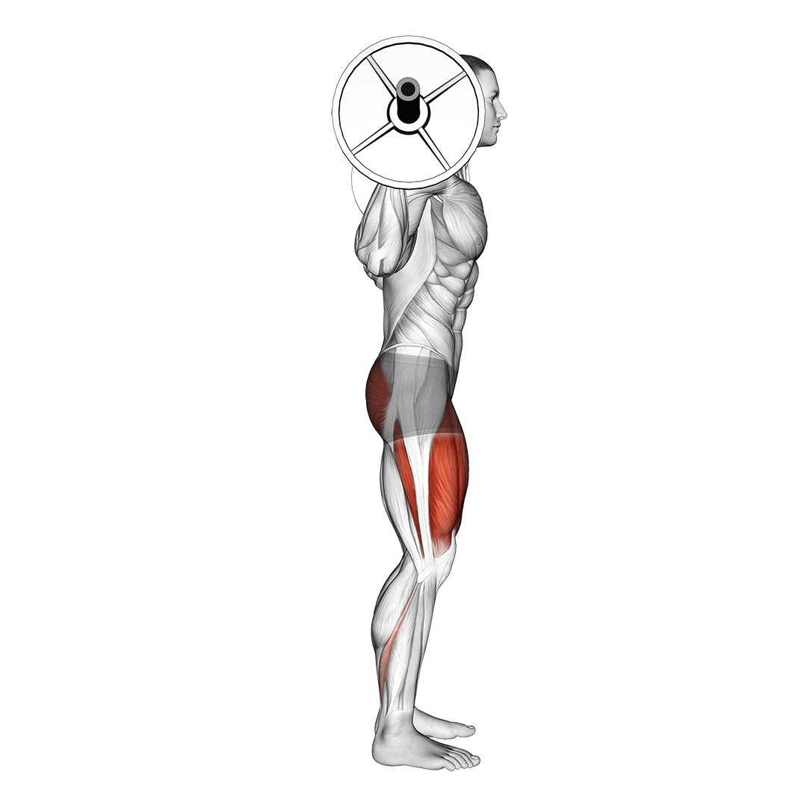
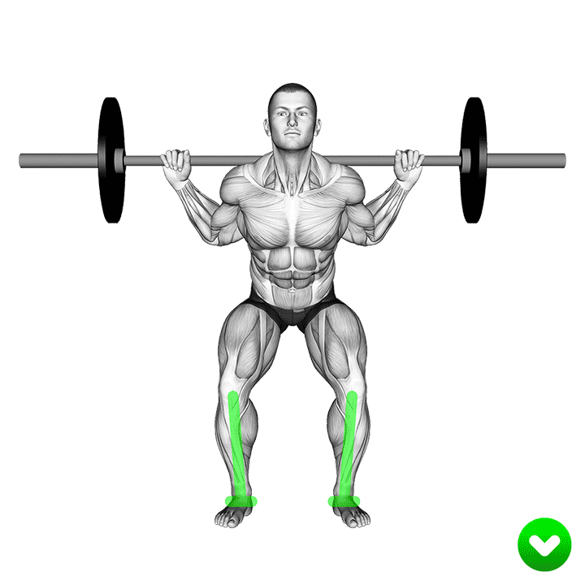
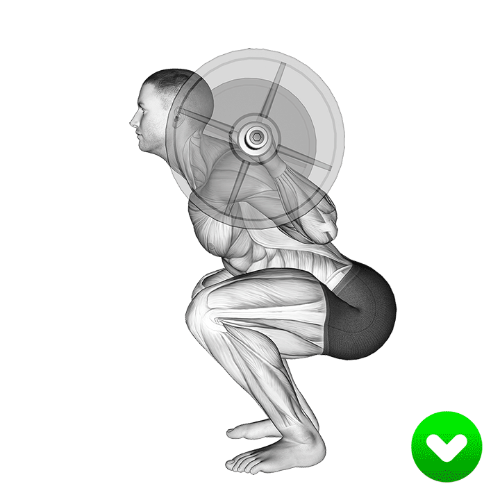

A squat is a strength exercise in which the trainee lowers their hips from a standing position and then stands back up.
During the descent and knee joints flex while the ankle joint dorsiflexes; conversely the hip and knee joints extend and the ankle joint plantarflexes when standing up.
A barbell squat, also known as a barbell back squat, is a compound exercise that activates muscle groups throughout your lower body, including your hamstrings, glutes, and lower back muscles.
Perform barbell squats by standing with your feet shoulder-width apart. Not only will squats shape your quads, hamstrings, and glutes, they'll also help your balance and mobility, and increase your strength.
In fact, a 2002 study found that the deeper your squat, the more your glutes will work.
In addition to the lower body, the squat also targets your core muscles. These muscles include the rectus abdominis, obliques, transverse abdominis, and erector spinae.
If you do a back squat or overhead squat, you’ll also work the muscles in your shoulders, arms, chest, and back.
BENEFITS OF BARBELL SQUAT
The barbell squat is, among other things, an exercise capable of imparting certain benefits that are otherwise difficult to achieve with the usage of other lower body exercises.
This is most noticeable in the ability of the barbell squat to impart skeletal muscle development,
burn fat and build strength to such an effective level that it easily outpaces many other exercises of its type -
among other benefits that are characteristic of the barbell squat’s nature as a resistance exercise.

Form Cues and Mechanics of the Barbell Squat
One of the most common mistakes novice exercisers make when performing a barbell squat is that of knee valgus, wherein the knees will bend inwards during the concentric portion of the exercise.
This can easily lead to patella dislocation, a loss of balance, or torn connective tissues if performed repeatedly.

In connection to improper knee rotation, improper spinal curve such as rounding at the upper back or shoulders can lead to severe injury,
requiring that the exerciser retain a braced core and neutral spine position throughout each repetition of the barbell squat as well.
During the eccentric or first phrase of the barbell squat, it is also important for the exerciser to ensure that both their hips and knees lower simultaneously,
as one set of joints bending before the other will not only affect their form, but place unneeded and excessive stress on said joints.

Common Mistakes to Avoid While Barbell Squatting
Excessive Resistance
Perhaps one of the most common mistakes exercisers make when performing a barbell squat is loading it with more weight than they could handle while maintaining proper form -
eventually leading to injury and the development of improper form habits.
Lifting of Heels
Among the various form cues that make up a proper barbell squat, the exerciser lifting their heels at the bottom of the repetition is one of the most frequently encountered. Fortunately,
it is not a mistake with serious ramifications for the most part.
Nonetheless, it is important for the exerciser to ensure that their heels always remain in contact with the ground so as to ensure that they stay properly balanced,
as well as allowing them to achieve a wider range of motion during the exercise.
‘Dive-Bombing’
Another common mistake made by exercisers is allowing their body to descend too rapidly during the first portion of the repetition - thereby affecting their form and placing the knees and lower back at risk of injury as stabilizer muscles are taxed by the greater momentum.
A repetition of the barbell squat should be performed in a slow and controlled manner, with every muscle group being activated thoroughly throughout the entire squat repetition.